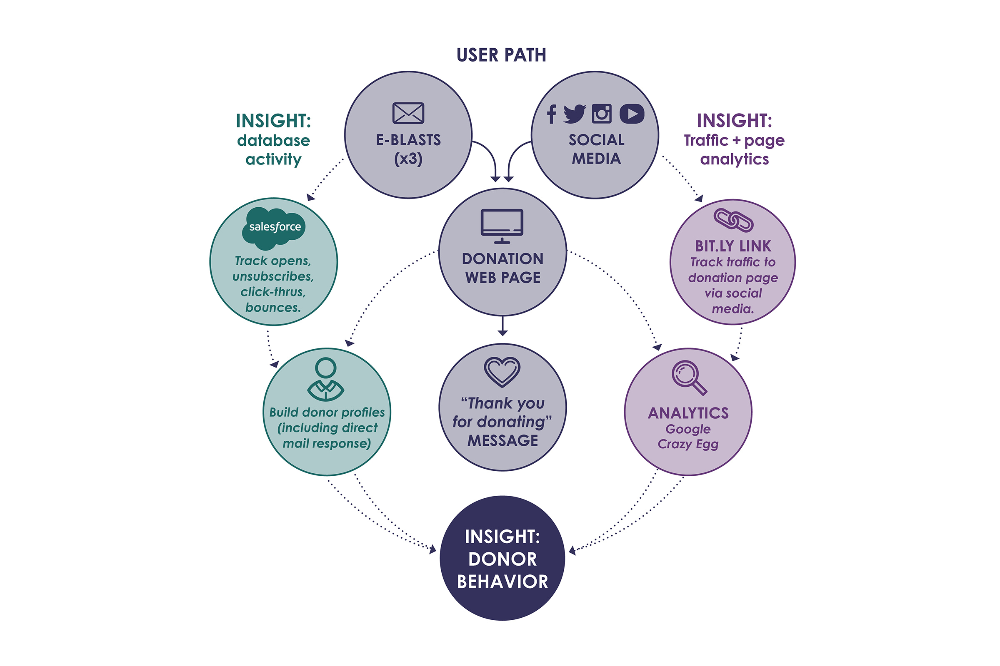

David Lynch Foundation (DLF) is a non profit that teaches meditation to people suffering from traumatic stress such as veterans, victims of domestic violence, and students in under-served schools.
Working with the development team, I orchestrated DLF's first multi-channel, integrated donation appeal campaign for Quiet Time, the program for students in under-served schools. Per the infographic below, the campaign consisted of three e-blasts synced with social media posts featuring video content. These channels directed potential donors to the campaign web page where they could make a donation. SalesForce tracking and a bit.ly link provided insight into donor behavior, identifying donors, donation amounts, and which channels drove the most traffic to the donation page. Research shows that direct mail continues to generate a strong response; this component also contributed insight into donor behavior to help inform future donation appeals.
In addition to the strategic and creative work shown here, I directed the front-end developer and contributed to scripting and editing of the videos.
